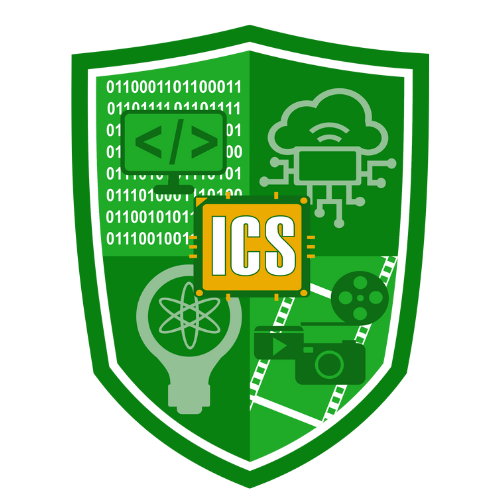

The new logo of the Institute for Computer Studies (ICS) features a shield taken from the official NBSC Logo.
The shield is divided into four quadrants, each representing technical specialized skills, and aims to deliver to the students. The upper left quadrant symbolizes Programming, depicted by the binary code as the machine language and a coding symbol. The upper right highlights the Internet of Things (IoT) through an icon of cloud-connected devices.
The lower left emphasizes Research and Innovation, illustrated with a lightbulb symbolizing new ideas. Lastly, the lower right showcases Multimedia, visualized with film strips, a play icon, and a camera. At the center, the ICS acronym is embedded in a microchip symbolizing the brain of the computer and the central role of computing in all these areas.
The Bachelor of Science in Information Technology (BSIT) at Northern Bukidnon State College (NBSC), under the Institute for Computer Studies (ICS), is a forward-looking academic program designed to develop competent, ethical, and globally competitive IT professionals.
This four-year degree program integrates strong theoretical foundations with extensive hands-on experience. Students engage in laboratory activities, case studies, and project-based learning that reflect real-world IT environments and industry practices.
Throughout the program, learners are exposed to modern tools, updated technologies, and relevant methodologies in key areas such as:
The program also emphasizes communication skills, collaboration, and professional values to ensure that graduates can effectively work in teams and adapt to the constantly evolving technology landscape.
By the end of the program, BSIT students are equipped with the knowledge, skills, and confidence needed to pursue careers in software development, networking, cybersecurity, system administration, and other IT-related fields, or to continue further studies and professional certifications.